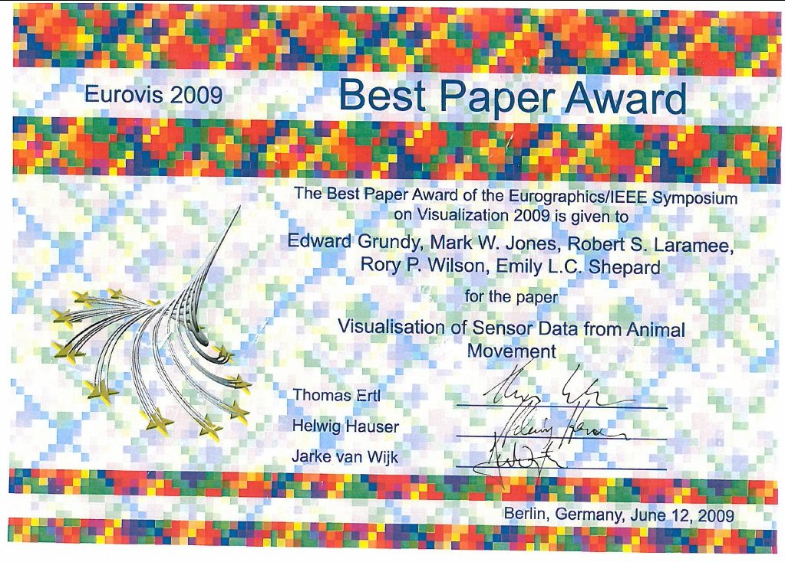

Visualization of Sensor Data from Animal Movement
E. Grundy, M. W. Jones, R. S. Laramee, R. P. Wilson, and E. F. Shepard
Abstract
A new area of biological research is identifying and grouping patterns of behaviour in wild animals by analysing data obtained through the attachment of tri-axial accelerometers. As these recording devices become smaller and less expensive their use has increased. Currently acceleration data are visualised as 2D time series plots, and analyses are based on summary statistics and the application of Fourier transforms. We develop alternate visualisations of this data so as to analyse, explore and present new patterns of animal behaviour. Our visualisations include interactive spherical scatterplots, spherical histograms, clustering methods, and feature-based state diagrams of the data. We study the application of these visualisation methods to accelerometry data from animal movement. The reaction of biologists to these visualisations is also reported.
Related Files
 Pre-print
Pre-print
Video
Best paper award
{kind=link}
DOI
10.1111/j.1467-8659.2009.01469.x
https://dx.doi.org/10.1111/j.1467-8659.2009.01469.x
Citation
E. Grundy, M. W. Jones, R. S. Laramee, R. P. Wilson, and E. F. Shepard, Visualization of Sensor Data from Animal Movement, Eurographics/ IEEE-VGTC Symposium on Visualization (Eurovis) 2009, Computer Graphics Forum 28(3), 815-822, 2009. https://dx.doi.org/10.1111/j.1467-8659.2009.01469.x
BibTeX
@ARTICLE{Visualization_Animal_Accelerometry,
author = {Ed Grundy and Mark W. Jones and Robert S. Laramee and Rory P. Wilson and Emily F. Shepard},
title = {Visualization of Sensor Data from Animal Movement},
journal = {Eurographics/ IEEE-VGTC Symposium on Visualization (Eurovis) 2009, Computer Graphics Forum},
volume = {28},
pages = {815--822},
number = {2},
doi = {10.1111/j.1467-8659.2009.01469.x},
issn = {0167-7055},
date={2009-06-10},
}